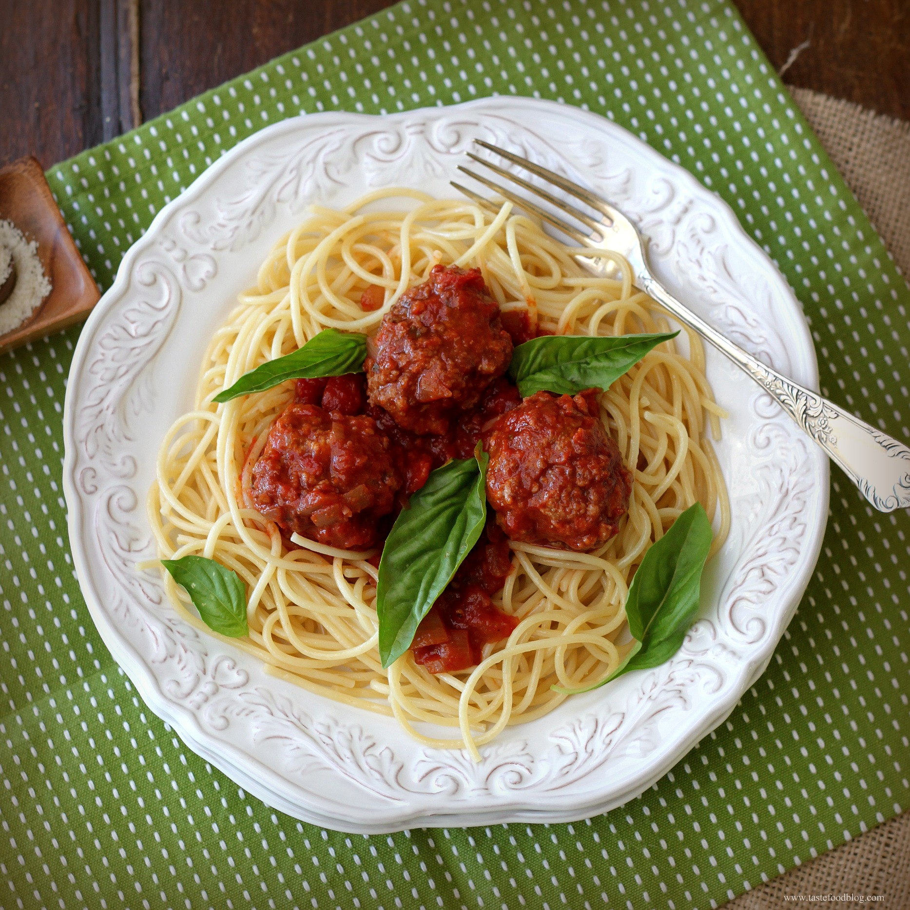

Spaghetti and Meatballs

Description
Spaghetti and meatballs is a classic Italian dish. While simple, it is extremely tasty.
This recipe may be a bit advanced for those looking for something quick and easy.
Total Time: 2 hours 30 minutes
Servings: 16
Ingredients
- 2 tablespoons olive oil
- 1 1/2 cups chopped onions
- 3 minced cloves of garlic
- 2 cans (12 oz ea.) tomato paste
- 3 cups water
- 1 can (29 oz.) tomato sauce
- 1/3 cup minced fresh parsley
- 1 tablespoon dried basil
- 2 teaspoons salt
- 1/2 teaspoon pepper
Meatballs
- 4 large, lightly beaten eggs
- 2 cups (cut into 1/4 inch pieces) soft bread cubes
- 1 1/2 cups 2% milk
- 1 cup grated Parmesan cheese
- 3 minced cloves of garlic
- 2 teaspoons salt
- 1/2 teaspoon pepper
- 3 pounds ground beef
- 2 tablespoons canola oil
- 2 pounds (cooked) spaghetti
Steps
Part 1:
- In a Dutch oven, heat olive oil over medium heat.
- Add onions; saute until softened.
- Add garlic; cook 1 minute longer.
- Stir in tomato paste; cook 3-5 minutes
- Add next 6 ingredients. Bring to a boil.
- Reduce heat; simmer, covered, for 50 minutes
Part 2:
- Combine the first 7 meatball ingredients.
- Add beef; mix lightly but thoroughly.
- Shape into 1 1/2 inch balls.
Part 3:
- In a large skillet, heat canola oil over medium heat.
- Add meatballs; brown in batches until no longer pink.
- Drain. Add to sauce; bring to boil.
- Reduce heat; simmer, covered, until flavours are blended, for about 1 hour, stirring occasionally.
- Serve with hot cooked spaghetti.
Tip
Instead of frying, you can bake the meatballs at 400 F on a rack for about 20 minutes, or until golden brown.
Reference: https://www.tasteofhome.com/recipes/best-spaghetti-and-meatballs/